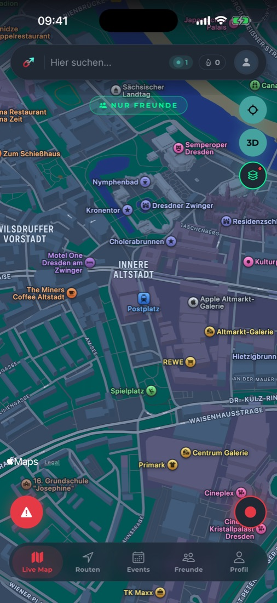
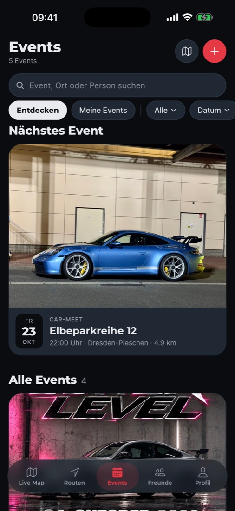
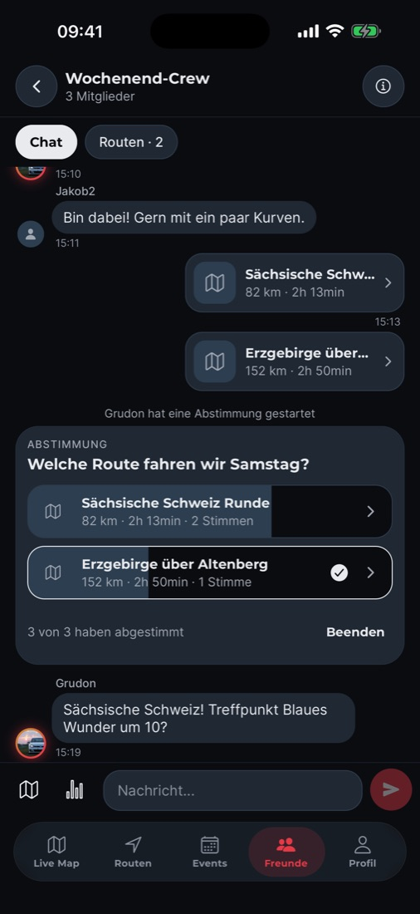
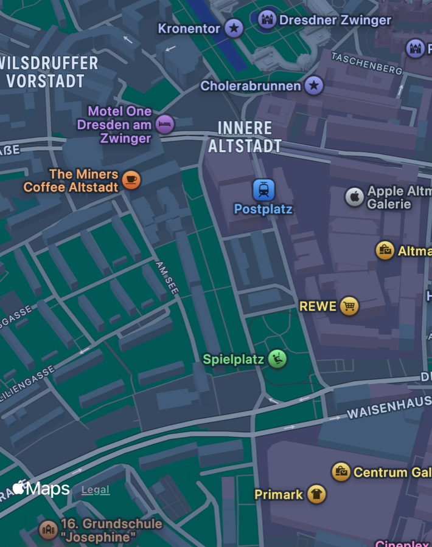

Fragen?Antworten.Kurz.
DriveLink ist eine kostenlose iPhone-App für Autotreffen und gemeinsame Ausfahrten. Zehn Fragen, zehn Antworten, in zwei Etappen.

Treffen & Ausfahrten
DriveLink ist eine kostenlose iPhone-App speziell für Autotreffen und gemeinsame Ausfahrten. Du siehst Car-Meets, Tuning- und Oldtimer-Treffen, Ausfahrten und Trackdays auf einer Karte, kannst nach Datum oder Entfernung sortieren, zusagen und die Navigation zum Treffpunkt starten. Veranstalter legen ihre Treffen selbst an, auch wiederkehrend und mit Lageplan.

Öffne in DriveLink den Tab „Events“ und sortiere nach Entfernung oder wechsle in die Kartenansicht. Du kannst nach Kategorie filtern (Car-Meet, Trackday, Ausfahrt, Spontan) und nach Ort oder Veranstalter suchen. Unter „Jetzt spontan in deiner Nähe“ erscheinen kurzfristige Treffen.
Mit DriveLink planst du gemeinsame Ausfahrten in einer Gruppe: Route planen oder teilen, über mehrere Routen abstimmen und die Gewinner-Route direkt als Kolonne starten. Unterwegs sehen sich alle Mitfahrer live auf einer Karte, und die App zeigt an, wenn jemand zurückfällt.

Eine Kolonne (Convoy) ist eine gemeinsame Fahrt mehrerer Autos. Alle Mitfahrer erscheinen live auf der Karte, eine Person führt als Navigator, es gibt einen Kolonnen-Chat und ein gemeinsames Ziel. Eine Kolonne endet automatisch spätestens nach 12 Stunden.
Lade die App, lege ein kostenloses Konto an und erstelle unter „Events“ ein neues Event mit Titel, Datum, Treffpunkt und Kategorie. Optional fügst du ein Coverbild, Fotos und einen Lageplan hinzu und stellst das Treffen als wöchentlich oder monatlich wiederkehrend ein.
App, Konto & Privatsphäre
Ja, DriveLink kannst du kostenlos laden und nutzen. Treffen finden, Events anlegen, Gruppen und Kolonnen kosten nichts.
Nein, DriveLink gibt es aktuell nur für das iPhone.
DriveLink läuft gerade als offene Beta über Apples TestFlight. Öffne den Beta-Link, installiere die kostenlose TestFlight-App und lade darüber DriveLink. Bald gibt es DriveLink auch direkt im App Store.
Nein. Du legst selbst fest, wer dich auf der Karte sieht: alle, nur Freunde oder niemand. Bis du dich entscheidest, bist du unsichtbar. Mit einer Ghost Zone um dein Zuhause bist du dort für alle unsichtbar, auch für Freunde und deine Kolonne.

DriveLink wird von Jakob Lischke in Dresden entwickelt, als unabhängige App von Autofans für Autofans. Kontakt: Support.
Deine Frage fehlt?
Schreib uns per Mail oder auf Instagram. Gute Fragen nehmen wir hier auf.